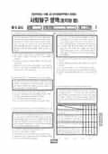

문제지

전국연합학력평가 · 시·도교육청 주관
2025년 10월 고2 학력평가 사회탐구 정치와법 1등급컷은 원점수 42점(추정), 표준점수 최고점은 76점입니다.
원점수 1등급컷은 공식 발표값이 아니라 EBSi·입시기관 값입니다. 등급별 값은 등급컷 표, 출처 구분은 데이터 원칙에 있습니다.

시험지를 먼저 풀어 보세요. 등급컷·표준점수·난이도는 흐리게 가려 뒀어요.
| 등급 | 원점수 | 표준점수 | 백분위 |
|---|---|---|---|
| 1 | 42 | 69 | 96 |
| 2 | 37 | 64 | 90 |
| 3 | 31 | 59 | 78 |
| 4 | 24 | 53 | 62 |
| 5 | 15 | 45 | 40 |
| 6 | 11 | 41 | 23 |
| 7 | 9 | 39 | 14 |
| 8 | 5 | 36 | 3 |
등급별 컷 · 입시기관 3곳 원점수 추정 종합(메가스터디·종로학원·대성마이맥) · 만점 50점
| 등급 | 표준점수 이상 | 인원(명) | 비율 |
|---|---|---|---|
| 1 | 69 | 1,592 | 4.76% |
| 2 | 64 | 2,140 | 6.4% |
| 3 | 59 | 3,984 | 11.91% |
| 4 | 53 | 5,856 | 17.51% |
| 5 | 45 | 7,426 | 22.21% |
| 6 | 41 | 5,263 | 15.74% |
| 7 | 39 | 3,832 | 11.46% |
| 8 | 36 | 2,724 | 8.15% |
| 9 | 31 | 620 | 1.85% |
시·도교육청 공개 자료
출처: 시·도교육청이 공개한 전국연합학력평가 성적 분석·통계자료(공개 자료 보기).
EBSi 응답자 기준으로 가장 많이 틀린 문항은 9번(2점)이고, 오답률은 77.8%입니다. 상위 15문항 중 3문항은 정답보다 한 오답을 고른 사람이 더 많았습니다(9번: 정답 ② 22.2%, ④ 56.9%). 오답률 50%를 넘은 문항은 6개입니다.
| 순위 | 문항 | 배점 | 오답률 | 정답 | 많이 고른 오답 |
|---|---|---|---|---|---|
| 1 | 9번 | 2점 | 77.8% | ② | ④ 56.9% |
| 2 | 16번 | 2점 | 67.1% | ② | ⑤ 28.1% |
| 3 | 20번 | 3점 | 64.1% | ④ | ③ 36.5% |
| 4 | 5번 | 3점 | 61.7% | ④ | ② 41.3% |
| 5 | 2번 | 3점 | 61.1% | ③ | ④ 24% |
| 6 | 15번 | 3점 | 50.3% | ④ | ⑤ 21% |
| 7 | 10번 | 3점 | 45.5% | ⑤ | ② 24.6% |
| 8 | 13번 | 3점 | 41.3% | ⑤ | ① 19.2% |
| 9 | 3번 | 2점 | 39.5% | ① | ③ 16.2% |
| 10 | 19번 | 3점 | 32.9% | ② | ③ 16.2% |
| 11 | 7번 | 2점 | 26.3% | ① | ② 7.2% |
| 12 | 6번 | 3점 | 24.6% | ① | ⑤ 9% |
| 13 | 18번 | 2점 | 23.4% | ① | ⑤ 18.6% |
| 14 | 14번 | 2점 | 19.8% | ③ | ② 8.4% |
| 15 | 17번 | 2점 | 15.6% | ③ | ④ 6.6% |
EBSi 가채점 응답자 기준 · 전 문항 중 오답률 상위 15문항
출처: EBSi 역대 등급컷·오답률 공개 화면. 가채점에 참여한 EBSi 이용자 응답이라 전체 응시자 정답률과는 다를 수 있습니다.
발행 기관: 시·도교육청(전국연합학력평가). 파일 위치: 이 사이트가 보관한 사본. 저작권은 발행 기관에 있습니다. 원본과 다르거나 게시 중단이 필요하면 연락처로 알려 주세요. 등급컷 출처 구분은 데이터 원칙에서 설명합니다.
막대 색은 역대 대비 난이도 · 진한 막대가 이 시험 · 막대를 누르면 그 회차로 이동
| 회차 | 1등급컷 | 표점 최고 | 1등급 표점 | 난이도 |
|---|---|---|---|---|
| 10월 학평2025년 고2이 시험 | 42 | 76 | 69 | 어려움 |
| 9월 학평2025년 고2 | 40 | 81 | 71 | 매우 어려움 |
| 6월 학평2025년 고2 | 45 | 73 | 69 | 보통 |
| 3월 학평2025년 고2 | 39 | 80 | 69 | 보통 |
| 10월 학평2024년 고2 | 47 | 70 | 68 | 매우 쉬움 |
| 9월 학평2024년 고2 | 45 | 74 | 70 | 어려움 |
| 6월 학평2024년 고2 | 41 | 77 | 69 | 매우 어려움 |
| 3월 학평2024년 고2 | 42 | 75 | 68 | 쉬움 |
| 9월 학평2023년 고2 | 44 | 75 | 70 | 매우 어려움 |
| 6월 학평2023년 고2 | 42 | 77 | 70 | 어려움 |
교육청 채점 결과 1등급 구분 표준점수는 69점, 최고점은 76점(118명)이었습니다. EBSi 가채점 응답자 기준 가장 많이 틀린 9번(2점, 77.8%)은 법률혼 관계에서 두 자녀를 둔 갑과 을의 사례로, 응답의 56.9%가 같은 오답(4번)을 골랐습니다.
16번(67.1%)은 17세 갑이 좋아하는 아이돌이 광고한 패딩 점퍼를 사려는 미성년자 계약 문항, 20번(64.1%)과 5번(61.7%)도 어려웠습니다.
9번처럼 법률혼 가족 문항에서는 혼인 신고로 생기는 효과가 핵심입니다. 배우자는 서로 상속인이 되고 상속분은 자녀보다 5할을 더하며(배우자 1.5 : 자녀 1), 혼인 중 출생한 자녀에 대한 친권은 부모가 공동으로 행사합니다. 사실혼 배우자는 상속권이 없다는 점이 자주 대비됩니다.
16번처럼 17세가 법정 대리인의 동의 없이 맺은 계약은 미성년자 본인과 법정 대리인이 취소할 수 있습니다. 상대방은 계약 당시 미성년자인 줄 몰랐다면 철회할 수 있고, 법정 대리인에게 추인 여부를 확답하라고 요구(최고)할 수 있습니다. 용돈처럼 처분을 허락받은 재산으로 한 계약은 취소할 수 없다는 점이 선택지의 단골입니다.